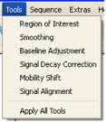
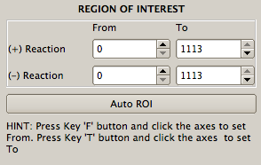
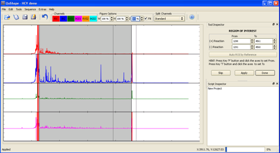
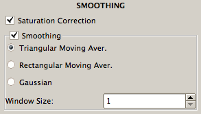
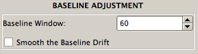
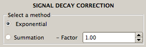
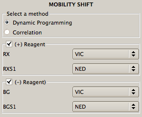
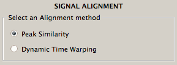

The pull-down Tools menu in the menu bar at the top of the screen has the following tool options: Region of Interest, Smoothing, Mobility Shift, Baseline Adjustment, Signal Decay Correction, and Signal Alignment. By default, they are executed by the program automatically in this order (and therefore there is no need for the user to open them manually, unless the user wishes to implement a particular tool out of this order). The standard procedure is for the user to execute each tool as it appears in the Tool Inspector window (by clicking the Apply button), inspect the result in the Data View window, and proceed to the next tool in the default sequence (by clicking the Done button). However, if the user is confident that all the tools will perform satisfactorily and there is no need for visual inspection of the intermediate results, he/she can choose the Apply All Tools option in the Tools menu.

The start and the end segments of electropherogram traces typically have stretches of excessive and undifferentiated fluorescence that obscure peaks that correspond to the nucleotides at the either end of the studied RNA. The user must select the region of interest (ROI) along the elution time axis that avoids such unusable segments. This task is accomplished with the Region of Interest tool, with which the user selects the start and end points of the (+) and (-) reagent traces. The user can either type the elution time values of these points directly in the spin boxes in the Tool Inspector window or, more conveniently, he/she can select the start point of the ROI by pressing and holding down the 'F' (from) key on the keyboard, and then placing the mouse arrow at the desired elution time position in the plot in the Data View window and clicking the left mouse button. The end point of the ROI is selected similarly by pressing and holding down the 'T' (to) key, and then placing the mouse arrow at the desired elution time position in the Data View window and clicking the left mouse button. Once the end-points of the ROI are entered, the user-chosen ROI will be displayed in the Data View window on a gray background.

The ROI end-points for the (+) reagent traces (i.e., RX, RXS1, and RXS2) are selected by typing their values in the (+) Reaction spin boxes or by pointing with the mouse in the RX panel. The ROI end-points for the (-) reagent traces (i.e., BG, BGS1, and BGS2) are selected by typing their values in the (-) Reaction spin boxes or by pointing with the mouse in the BG panel. Note that in the Data View window the saturated portions of the traces are shaded in red.
If the current data have a reference project, the Auto ROI by Reference button will be live in the Tool Inspector window, and clicking this button will find the ROI automatically, by matching to the ROI in the reference project.

The Smoothing tool filters out high-frequency noise in the data and finds and corrects saturated data points. Triangular Moving Average is the default smoothing method. Rectangular Moving Average (boxcar) and Gaussian are two alternative methods available for the user.
The width of these smoothing filters is shown in the Window Size box. The default value is 1; it can be increased by the user if greater smoothing is desired.

The Baseline Adjustment tool is used to remove baseline offset. Baseline is defined by the minima of a set of consecutive elution time intervals whose length is specified in the Baseline Window (default value is 60). If smoothing of the baseline drift is desired, the Smooth the Baseline Drift box should be checked.

A characteristic feature of fluorescent signals in SHAPE electropherograms is that intensity gradually declines as a function of the elution time due to technical reasons. Such gradual signal decay must be corrected computationally, and the Signal Decay Correction tool was designed to accomplish this task. The most effective method offered in this tool is Automatic Summation, and it is used as a default.
One alternative method is Exponential. It is an approximate method that relies on fitting an exponential function to the data and normalizing the data by this function.
Another alternative method is Summation, which is the same method as Automatic Summation, but the user determines the value of the key parameter, Factor.

Use of different fluorescent labels in the same capillary results in slight differences in retention times for fragments of the same sequence and length. Therefore all data traces within each capillary have to be aligned relative to each other by time-shifting and time-scaling them along the elution time axis. The Mobility Shift tool performs this operation.
The default mobility shift correction method is Position Similarity. A method based on dynamic time warping (Dynamic Programming) is also available.

If (+) reagent and (-) reagent signals are measured in separate capillaries, the two traces must be aligned by time-shifting and time-scaling along the elution time axis. The Signal Alignment tool is used to align pairs of signals across two capillaries.
Since signals within each capillary are aligned using the Mobility Shift tool, it is necessary to perform the alignment of only two signals across two capillaries and the other signals will become aligned as well. Because the sequencing signals in different capillaries (RXS1 and BGS1 and RXS2 and BGS2, if present) are much more similar to each other than are the reaction signals (RX and BG), the two capillaries are aligned using RXS1 and BGS1 signals (default option). If desired, RXS2 and BGS2 signals can be used in alignment instead by selection in the Seq. Channels window.
Signal alignment is a computationally intensive operation, typically taking several tens of seconds to complete. During this operation, the left-bottom corner of the screen will display the “Applying…” message. Once the operation is finished, this message will change to “Applied”.

After the alignment procedure is finished, the aligned RX and BG signals will be plotted superimposed in one panel in the Data View window and the aligned RXS and BGS signals will be plotted superimposed in the other panel, so that the accuracy of the alignment can be checked visually. If misalignment is found, it can be corrected manually after clicking the Modify Matched Peaks button. This will change the display: RXS signal will be plotted above BGS signal and vertical lines will be drawn linking a subset of the matched peaks in the two signals.
An incorrect link between two peaks in the two signals can be changed by pressing and holding the 'Shift' key, while placing the mouse arrow on the wrong peak, clicking and holding the left mouse button, and dragging the link to the desired peak.
If a new link is desired, press and hold the 'A' key while clicking with the mouse on the two peaks that should be linked.
If a link must be removed, press and hold the 'D' key while clicking on that link with the mouse.
Once all the desired link changes are made, click the Apply button to realign the two signals according to the newly imposed constraints.
This tool applies all preprocessing tools sequentially. In this way, the processing time is decreased.